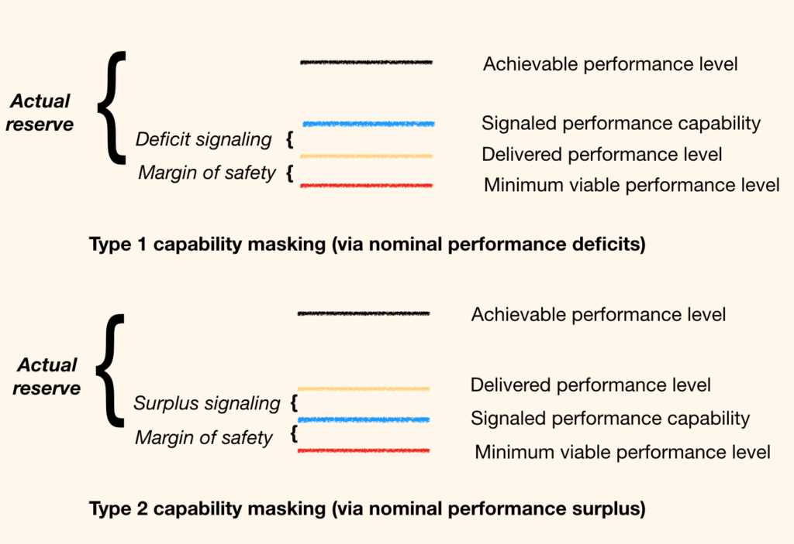

Chapter 5
In a world that runs on ceremonial expectations of optimal performances, but where it is rarely in your best interests to actually deliver optimal performances, practicing mediocrity necessarily involves capability masking: the act of hiding the true extent of your capabilities.
Capability masking is the opposite of "fake it till you make it" behavior, and comes in two varieties, illustrated below, both of which are involved in the behavior commonly referred to as sandbagging.

Capability masking has to be done in a subtle way. You can't just pick a suboptimal performance level that's in your own best interests and then nail it precisely without breaking a sweat. Sandbagging is an artistic performance, not a throttle setting, and it's worth learning to do well.
Controlled precision in hitting a performance level is a clear tell that you're not going all out to the edge of your performance envelope. That would belie the prevailing power narrative built around the counterparty's right to expect optimal performance, and your obligation to deliver it. It might set up a challenge to power and authority that neither party wants to navigate at that moment.
So you have to signal an optimal performance capability that's lower than your actual capability, and also slightly different from your desired performance level, and then miss the promised level and hit the desired level, by either undershooting or overshooting. The nature of the miss supplies the fodder for rationalizing performance that's different from what has been ceremonially promised.
In Type 1 capability masking, you undershoot the promised performance level (often with deliberate, visible mistakes) and offer appropriate apologies and excuses.
In Type 2, you overshoot the promised performance level, while still falling short of your actual capability, explaining the excess performance away as non-repeatable luck.
Which you pick depends on 3 variables: the actual performance level that is in your best interests to deliver, your estimate of the actual limits on the counterparty's power to coerce more performance out of you, and the level of expectations you want to set for the future.
In both the cases illustrated above, the actual depth of your reserve capability is being hidden from the counterparty, and the actual limits on the counterparty's power to extract performance are being hidden from you.
The ceremonial setting of mutual expectations, consistent with nominal rights and obligations, serves to prop up a performed narrative of relative nominal power. The actual delivered performance serves the immediate functional need, and updates an uncertain, evolving mutual assessment of actual relative power.
Note the information deficits on both sides. They may be aware you're masking your capability but will be uncertain about the extent of the masking. You on the other hand may be aware they are overstating the extent of their power to coerce more performance out of you, but will be uncertain about the extent of the overstatement.
In both cases, the knowledge state of the counterparty could range from completely clueless to completely complicit. When they are completely clueless, your excuses or "I just got lucky" stories have to be very persuasive. When they are complicit, they can be phoned in just well enough convince casual onlookers. The point is to hit a performance level that's acceptable to both parties now, while preserving a fiction around the performance level that ought to be on display.
We often recognize capability masking as part of a principal-agent information asymmetry problem, but power masking is also usually present. If you as an agent have an incentive to mask the true extent of your capabilities, the principal usually has an incentive to signal more power than they have, while masking the actual limit on power, so you're never quite sure how much sandbagging you can get away with.
The result is an equilibrium of Mutually Assured Mediocrity (MAM), as both principal and agent operate below actual capabilities to coerce and deliver performance respectively, via power masking and capability masking. MAM is an energy efficient way to fulfill needs.
The effective psychological transaction is: "I will pretend to believe your explanations for your performance gap if you pretend to accept my posture of power."
Non-volitional optimal performances requires the powerful party to have extraordinary amounts of power that can be nakedly exercised, with no masking. Think Pharoahs with an army of slavedrivers armed with whips. You're going to work yourself nearly to death because sandbagging could mean actual death.
On the other extreme, when you suspect that the nominally powerful party has very little actual power, you can be increasingly insolent and open in your sandbagging, all the way to nakedly suboptimal performance or non-performance. The fiction can get really thin, just enough to preserve a very thin veneer of nominal power being respected. Such a situation is often on the edge of open rebellion and a power shift. Either party might break. The pressure of increasingly unsustainable face-saving may trigger a costly power display on the part of the principal, or cosmetic pretense may give way to open insubordination on the part of the agent.
Capability masking is a big part of what I call optimization theater. Our world runs on transactions that are ceremonially based on one party (usually the stronger one) demanding optimal performance from another and the other promising that performance. Job candidates promise to "do their best". Sales people tell you they're giving you the best deal possible. Politicians promise to work all out to fulfill campaign promises. Parents pretend in playing with children that they're trying hard. Children promise to clean their rooms.
The ceremony of demanding and promising optimal performance is about validating the nominal relative power of the two powers, while allowing the actual relative power to govern the working relationship. Optimization theater has 4 effects generally.
- An immediate functional need is acceptably fulfilled by a mediocre performance
- A narrative of stable power relations with concomitant right to expect/obligation to deliver optimal effort is perpetuated
- Actual depth of capability is masked by a weaker party.
- Actual limits on power are masked by the stronger party.
This is a good thing. Optimization theater serves as a check and balance on fake-it-till-you-make-it false consciousness. Instead of pretending we can do more than we actually can, we pretend we can do less. Instead of a fragile pattern of constantly overreaching and failing, driven by clueless true believers in false consciousness myths, we have a pattern of constantly underpromising, and sometimes overdelivering, by more self-aware actors. Optimization theater is how we learn about actual distributions of power and capabilities, pick battles at the right times to reshape them, and keeping the world running with minimal expenditure of social energy at other times.
The evolution of a society is an arms race between the fragile evolution of false consciousness myths and the robust evolution of mutually assured mediocrity equilibria. That's how you slouch towards utopia.